A wall, and the ground it holds.
A block retaining wall carrying the grade back off the house, with granite treads set into the run. This page updates as we build it — newest stage at the bottom, the way the job actually went.
- Where
- Cape Cod
- Started
- August 2026
- Wall
- Segmental block, granite treads
- Status
- In progress
Before anything is priced, you walk the ground with the person who has to live on it. Where the water goes, what has to stay, what the grade is really doing behind the house.
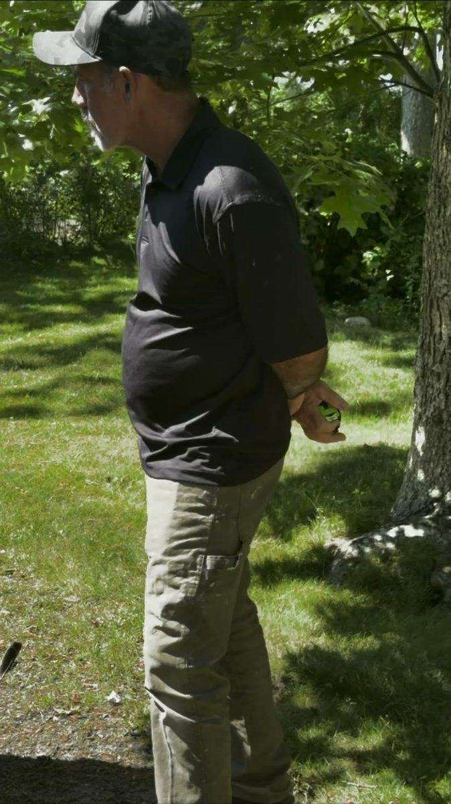
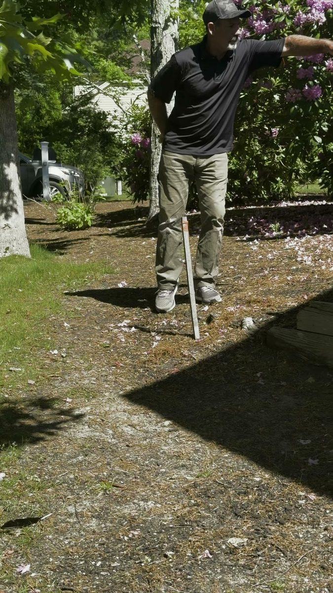
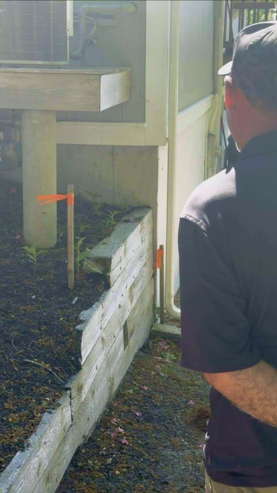
Ties out, ground opened, base compacted in lifts. The first course is the one that matters — every course above it inherits whatever you got wrong here, so it gets checked, pulled and checked again before the second one goes on.
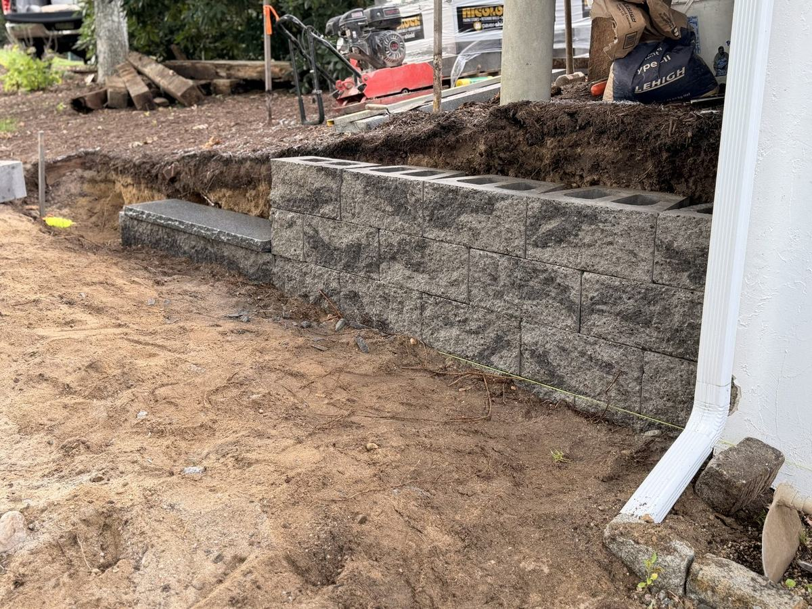
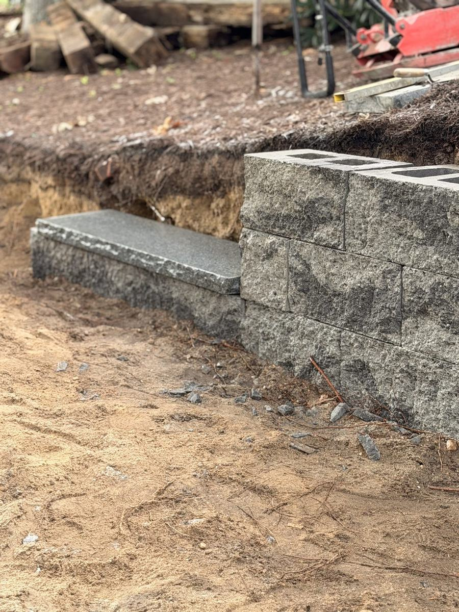
Wall carried along the house line with the granite treads set into it as it goes, rather than cut in afterwards. Cap stones levelled one at a time. Backfill and the top of the grade come next.

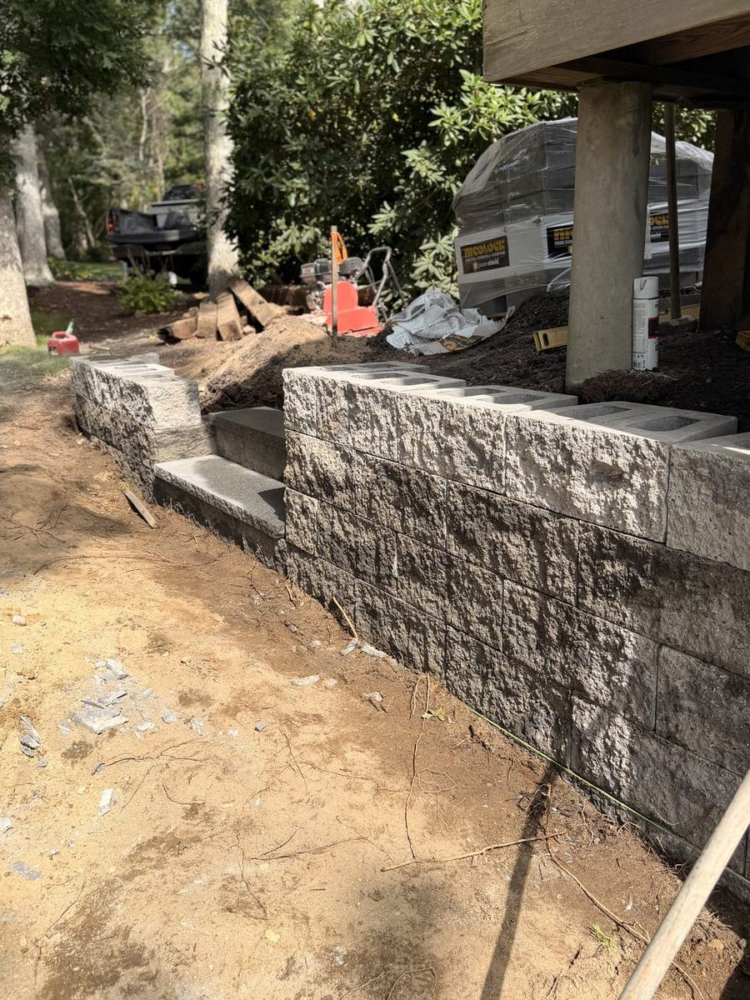
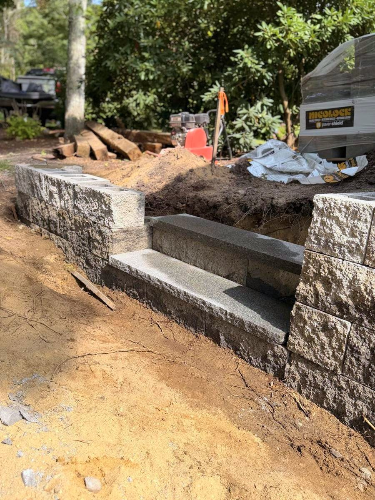
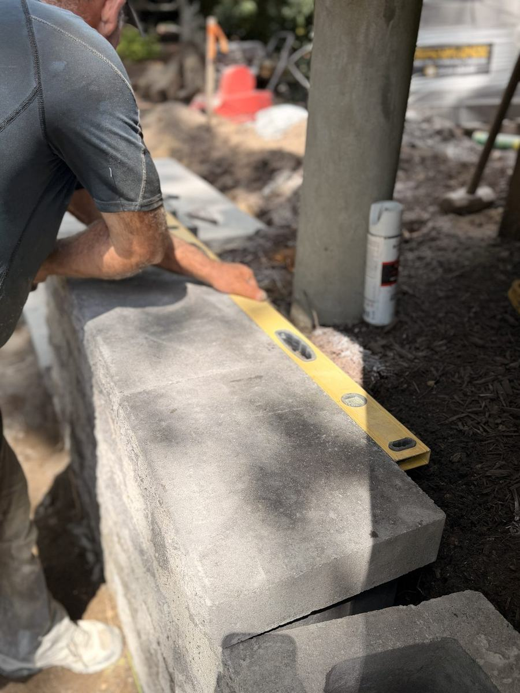
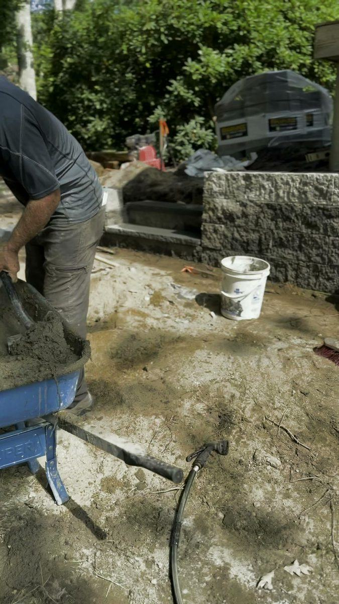
Granite treads set into the wall, cap course carried back to the house, and the cobble edge that holds the bed line and moves the roof water off the foundation.
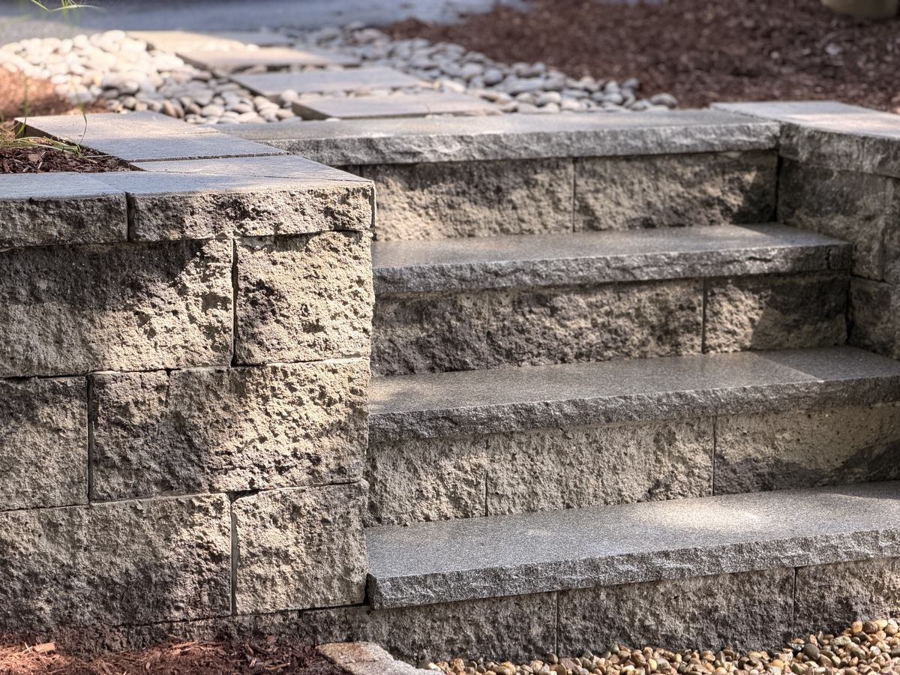
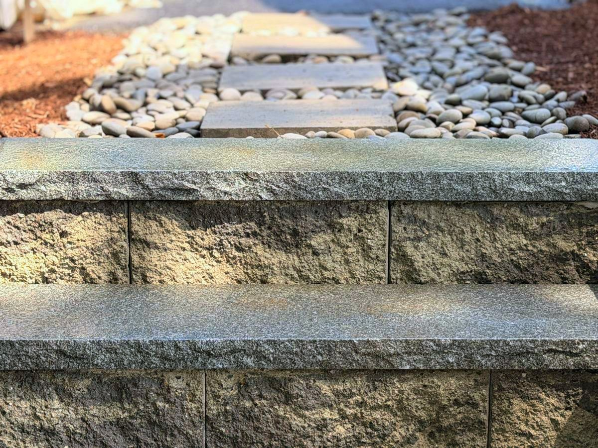
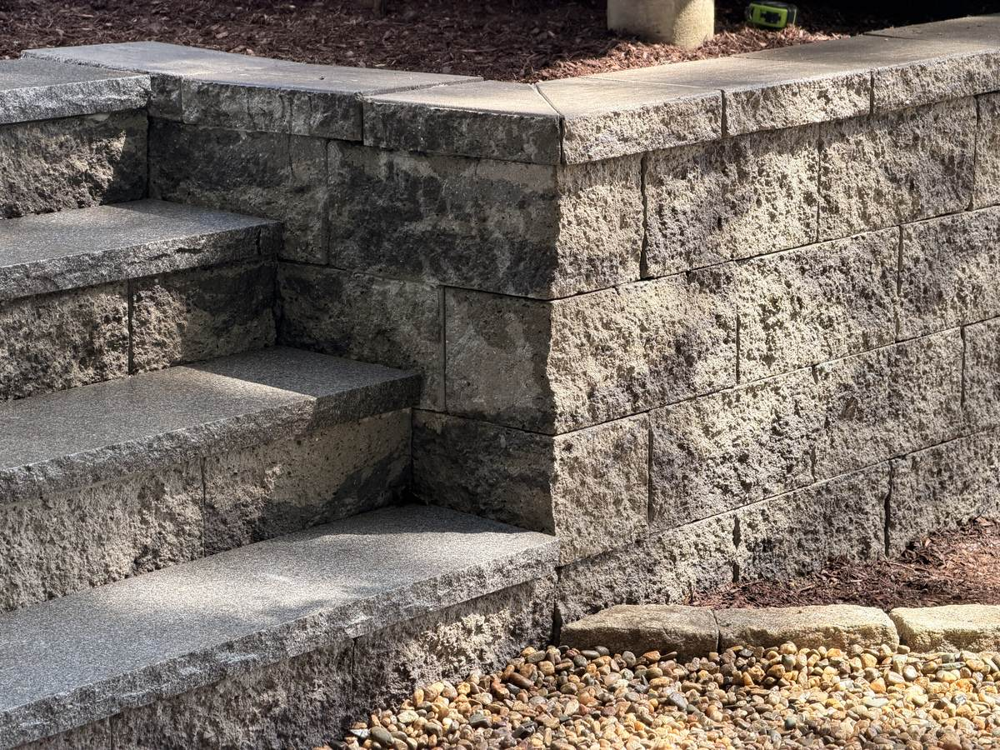
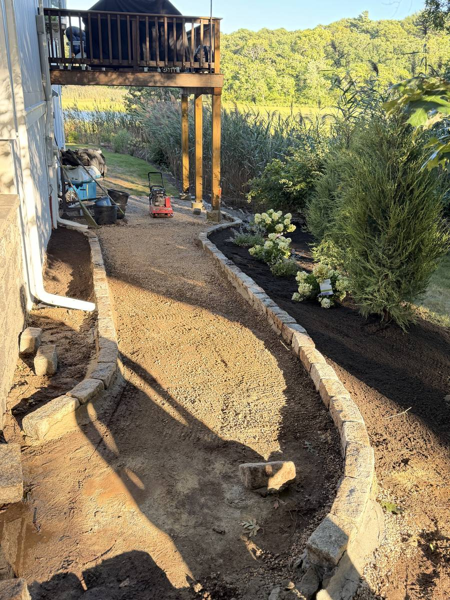
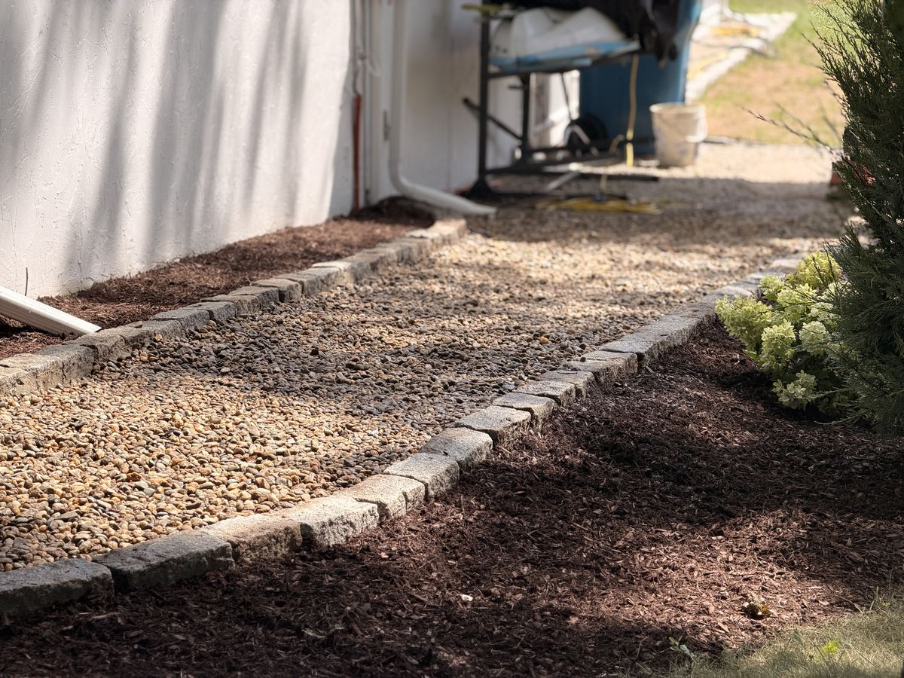
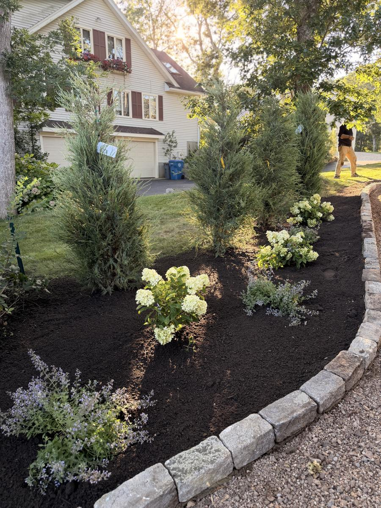
Punch list and site cleanup. This page updates as each one happens.
Anyone can set the middle. The edge tells you who built it.
Get a free estimate